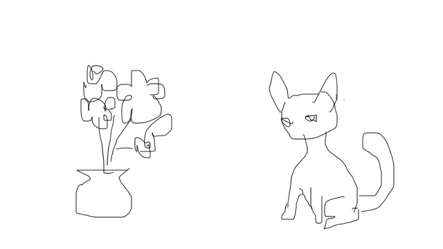
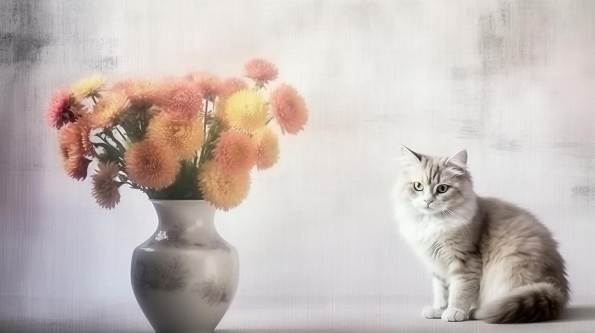
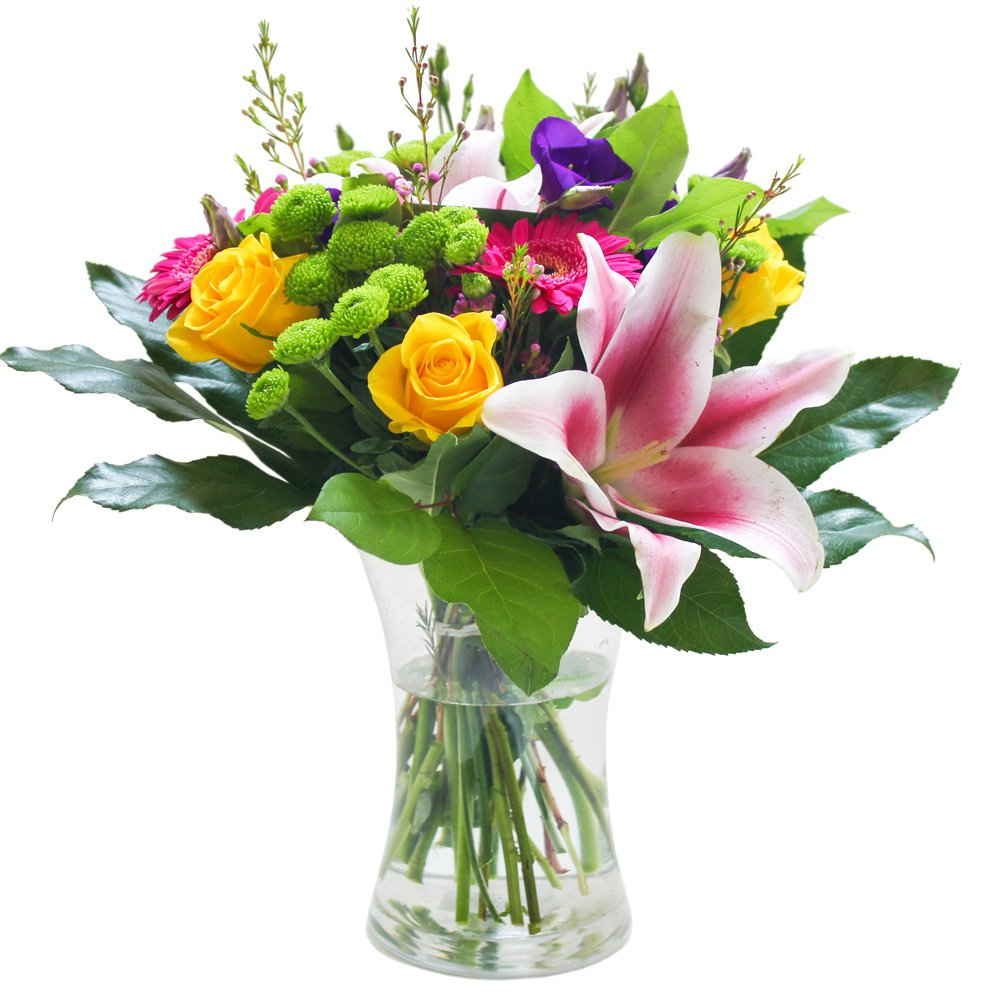
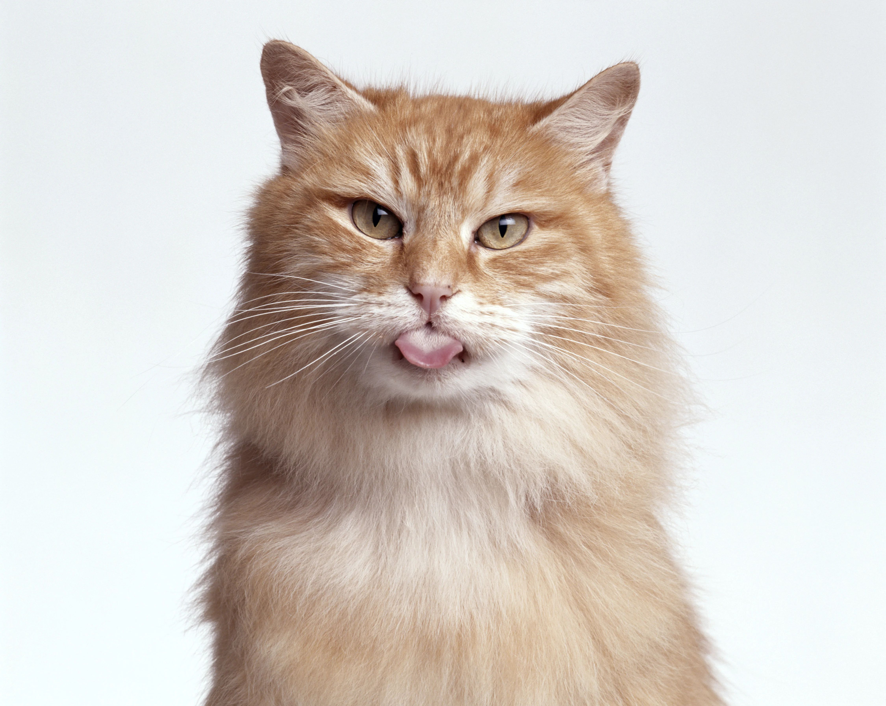
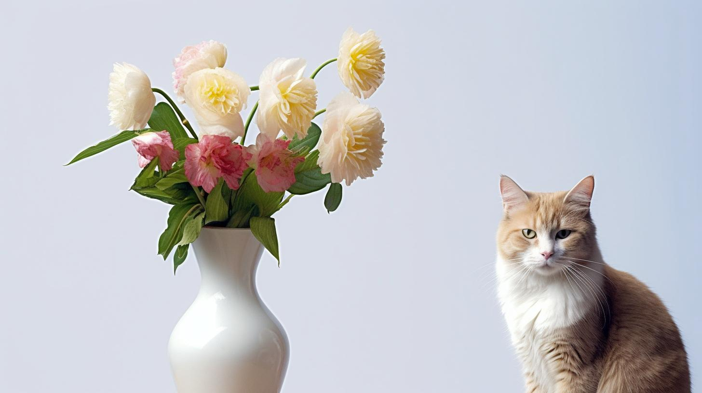

| Gambar |
|---|
|  |
| Sketch input |
|  |
| https://s.mj.run/d4TE2EnCxDU high quality photo of a vase of flower and a cat, studio setting, high key, dramatic vogue --ar 16:9 --s 250 |
|   |
| foto tambahan konteks |
|  |
|
hasil skets dengan penambahan konteks https://s.mj.run/2u7nxkD6Dl0 https://s.mj.run/nbzvvfyoERM https://s.mj.run/Ken6ncI8jCg high quality photo of a vase of flower and a cat, studio setting, high key, dramatic vogue --ar 16:9 |